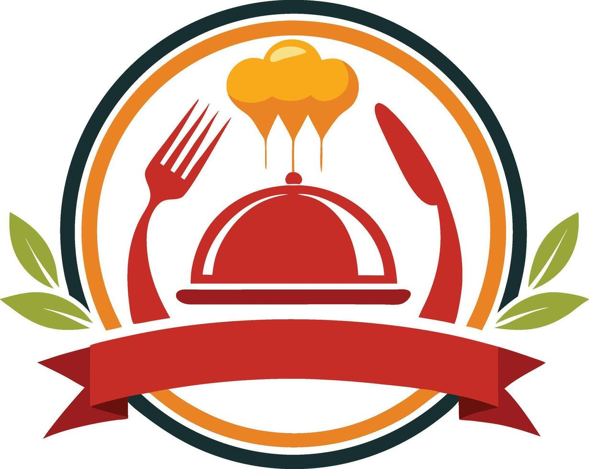

Ovoj restoran e italijanski restoran vo koj sto ima razni vidovi na pizzi i pijaloci.Osnoven e vo 2020 godina i si raboti se kako sto treba i funkcionire odlicno i gostite ni se zadovolni

Крцкави компирчиња, зачинети со сол и послужени со сос по избор.
Цена: 120 ден.
Поховани стапчиња со растопена моцарела, послужени со доматен сос.
Цена: 220 ден.
Препечено лепче со свежи домати, босилек и маслиново масло.
Цена: 180 ден.